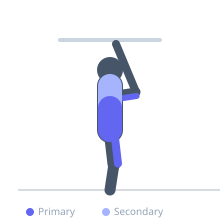
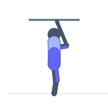

Exercise guide / L-Sit
L-Sit
The L-sit is an advanced calisthenics isometric hold performed on dip bars, parallel bars, or the floor, in which the athlete supports their entire body on straight arms while holding the legs parallel to the floor, forming an L-shape with the body. It simultaneously demands significant triceps and shoulder pressing strength to depress the scapulae and hold the torso up, while the hip flexors and rectus abdominis maintain the legs in the horizontal position. It is a core gymnastics skill and a prerequisite for more advanced bar movements.
Primary muscles
rectus abdominis
iliacus
psoas major
triceps long head
Secondary muscles
transverse abdominis
rectus femoris
trapezius lower
Stabilizers
triceps lateral head
pectoralis minor
Equipment
Dip Bars / Dip Station
Optional
Gymnastic Rings


Starting position
- Stand between dip bars with hands gripping each bar. Arms are fully extended and the body hangs with feet off the floor.
Setup
- Set dip bars at a width that allows comfortable hand placement. Alternatively perform on the floor between two yoga blocks or plates.
Steps
- Step 1: Grip the dip bars with straight arms and depress the scapulae (push shoulders down away from ears).
- Step 2: Raise both legs simultaneously until they are parallel to the floor, keeping them straight and together.
- Step 3: Maintain fully extended elbows and a tall torso throughout the hold.
- Step 4: Point the toes and squeeze the thighs together.
- Step 5: Hold for the prescribed duration, then lower the legs with control.
Coaching cues
- Push the floor or bars away from you
- Depress the scapulae — shoulders down, not shrugged
- Legs are a shelf — keep them flat
Breathing
- Breathe shallowly during the hold. Avoid deep breaths that break core tension.
Range of motion
- Legs must be fully extended and held parallel to the ground. The torso must remain upright throughout.
Tempo
- Hold for 5–30 seconds. Accumulate total time over multiple sets. Progress from tuck L-sit → one leg extended → full L-sit.
Common mistakes
- Bending the elbows instead of pressing down into straight arms
- Allowing the shoulders to shrug upward instead of actively depressing the scapulae
- Bending the knees when hip flexor strength is insufficient
- Letting the legs drop below parallel
Safety
- Build prerequisite triceps pressing strength (dips) and hip flexor strength (hanging knee raises) before attempting the full L-sit.
- Wrist discomfort is common on the floor variation — use parallel bars or push-up handles to reduce wrist extension.
Training
- strength: 1–1 reps
- strength: 3–5 sets
- Rest: {'strength': 120}